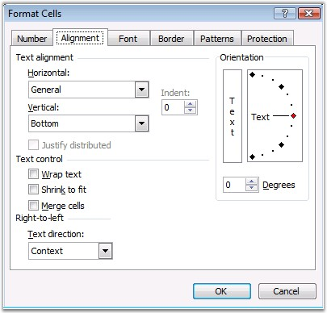
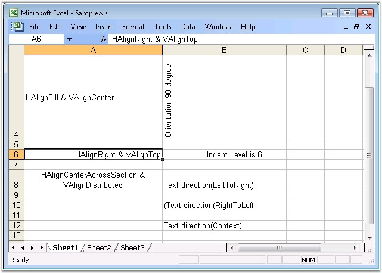

The following are some of the alignment settings available in Excel.
Text Alignment
Text has to be aligned inside the cells to properly fit in any data. This is done in Excel by using the Horizontal and Vertical alignment settings either through the Formatting toolbar or through the options provided by the Alignment tab in the Format Cells dialog box. In addition to the Left, Center, and Right alignments, Horizontal alignment option goes further and allows text to be justified. This can be especially useful, if the text is significantly long. Vertical alignment option allows you to align the contents of a cell towards the Top, Middle or Bottom area of a cell.

Figure 36: Alignment Settings in MS Excel
Indentation
In some circumstances, you may neither want to center the text nor keep it left or right aligned. In such cases, indentation can be done. Indentation consists of "pushing" the text to the left or right, without aligning it to center. To indent a text, you need to specify the number of units in the Indent box.
Alignment Settings in XlsIO
XlsIO supports alignment properties similar to Excel. The following code example illustrates the alignment settings that can be applied to the cells by using XlsIO.
|
[C#]
// Text Alignment Setting (Horizontal Alignment). sheet.Range["A2"].CellStyle.HorizontalAlignment = ExcelHAlign.HAlignCenter; sheet.Range["A4"].CellStyle.HorizontalAlignment = ExcelHAlign.HAlignFill; sheet.Range["A6"].CellStyle.HorizontalAlignment = ExcelHAlign.HAlignRight; sheet.Range["A8"].CellStyle.HorizontalAlignment = ExcelHAlign.HAlignCenterAcrossSelection;
// Text Alignment Setting (Vertical Alignment). sheet.Range["A2"].CellStyle.VerticalAlignment = ExcelVAlign.VAlignBottom; sheet.Range["A4"].CellStyle.VerticalAlignment = ExcelVAlign.VAlignCenter; sheet.Range["A6"].CellStyle.VerticalAlignment = ExcelVAlign.VAlignTop; sheet.Range["A8"].CellStyle.VerticalAlignment = ExcelVAlign.VAlignDistributed;
// Text Indent Setting. sheet.Range["B6"].CellStyle.IndentLevel = 6; |
|
[VB.NET]
' Text Alignment Setting (Horizontal Alignment). sheet.Range("A2").CellStyle.HorizontalAlignment = ExcelHAlign.HAlignCenter sheet.Range("A4").CellStyle.HorizontalAlignment = ExcelHAlign.HAlignFill sheet.Range("A6").CellStyle.HorizontalAlignment = ExcelHAlign.HAlignRight sheet.Range("A8").CellStyle.HorizontalAlignment = ExcelHAlign.HAlignCenterAcrossSelection
' Text Alignment Setting (Vertical Alignment. sheet.Range("A2").CellStyle.VerticalAlignment = ExcelVAlign.VAlignBottom sheet.Range("A4").CellStyle.VerticalAlignment = ExcelVAlign.VAlignCenter sheet.Range("A6").CellStyle.VerticalAlignment = ExcelVAlign.VAlignTop sheet.Range("A8").CellStyle.VerticalAlignment = ExcelVAlign.VAlignDistributed
' Text Indent Setting. sheet.Range("B6").CellStyle.IndentLevel = 6 |
Text Control
The Text Control section provides three options: Wrap Text, Shrink To Fit, and Merge Cells.
At times, the text you enter in a cell will be wider than the cell. In such situations, the text may be hidden beyond the edge of the cell. Although one solution to this problem is to resize the cell, there are two additional solutions. They are, to Shrink the text to fit the cell, or Wrap the text so that it is displayed in multiple lines within the cell.
Yet another solution could be to merge multiple cells, so that the text can be fully displayed.
XlsIO allows to set these text control options by using the following APIs.
|
[C#]
// Merging of Cells. sheet.Range["A16:C16"].Merge();
// Wrapping Text. sheet.Range["A14"].WrapText = true; |
|
[VB.NET]
' Merging of Cells. sheet.Range("A16:C16").Merge()
' Wrapping Text. sheet.Range("A14").WrapText = True |
Orientation
The Orientation section enables you to bend the text to a fixed angle. There are two ways to set an angle. By dragging the small red diamond, one can specify the desired angle. You can also click one of the arrows of the Degrees spin button.
|
[C#]
// Text Orientation Settings. sheet.Range["B2"].CellStyle.Rotation = 60; sheet.Range["B4"].CellStyle.Rotation = 90; |
|
[VB.NET]
' Text Orientation Settings. sheet.Range("B2").CellStyle.Rotation = 60; sheet.Range("B4").CellStyle.Rotation = 90 |
Text Direction
You can specify the text orientation by using the ReadingOrder property. The following code example illustrates this.
|
[C#]
// Text Direction Setting. sheet.Range("B8").CellStyle.ReadingOrder = Syncfusion.XlsIO.ExcelReadingOrderType.LeftToRight; sheet.Range("B10").CellStyle.ReadingOrder = Syncfusion.XlsIO.ExcelReadingOrderType.RightToLeft; sheet.Range("B12").CellStyle.ReadingOrder = Syncfusion.XlsIO.ExcelReadingOrderType.Context; |
|
[VB.NET]
' Text Direction Setting. sheet.Range("B8").CellStyle.ReadingOrder = Syncfusion.XlsIO.ExcelReadingOrderType.LeftToRight sheet.Range("B10").CellStyle.ReadingOrder = Syncfusion.XlsIO.ExcelReadingOrderType.RightToLeft sheet.Range("B12").CellStyle.ReadingOrder = Syncfusion.XlsIO.ExcelReadingOrderType.Context |

Figure 37: XlsIO with Alignment Settings